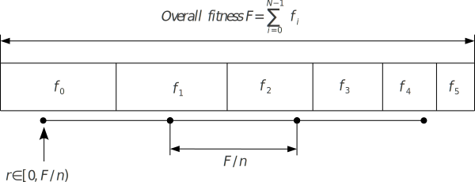

Module io.jenetics.base
Package io.jenetics
Class StochasticUniversalSelector<G extends Gene<?,G>,N extends Number & Comparable<? super N>>
java.lang.Object
io.jenetics.ProbabilitySelector<G,N>
io.jenetics.RouletteWheelSelector<G,N>
io.jenetics.StochasticUniversalSelector<G,N>
- All Implemented Interfaces:
Selector<G,N>
public class StochasticUniversalSelector<G extends Gene<?,G>,N extends Number & Comparable<? super N>>
extends RouletteWheelSelector<G,N>
StochasticUniversalSelector is a method for selecting a
population according to some given probability in a way that minimize chance
fluctuations. It can be viewed as a type of roulette game where now we have
P equally spaced points which we spin.

The figure above shows how the stochastic-universal selection works; n is the number of individuals to select.- Since:
- 1.0
- Version:
- 5.0
- See Also:
-
Field Summary
Fields inherited from class io.jenetics.ProbabilitySelector
_reverter, _sorted, POPULATION_COMPARATOR -
Constructor Summary
Constructors -
Method Summary
Methods inherited from class io.jenetics.RouletteWheelSelector
probabilitiesMethods inherited from class io.jenetics.ProbabilitySelector
probabilities
-
Constructor Details
-
StochasticUniversalSelector
public StochasticUniversalSelector()
-
-
Method Details
-
select
This method sorts the population in descending order while calculating the selection probabilities.- Specified by:
selectin interfaceSelector<G extends Gene<?,G>, N extends Number & Comparable<? super N>> - Overrides:
selectin classProbabilitySelector<G extends Gene<?,G>, N extends Number & Comparable<? super N>> - Parameters:
population- The population to select from.count- The number of phenotypes to select.opt- Determines whether the individuals with higher fitness values or lower fitness values must be selected. This parameter determines whether the GA maximizes or minimizes the fitness function.- Returns:
- The selected phenotypes (a new Population).
-
toString
- Overrides:
toStringin classRouletteWheelSelector<G extends Gene<?,G>, N extends Number & Comparable<? super N>>
-